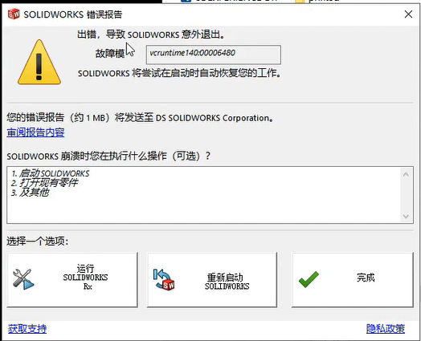
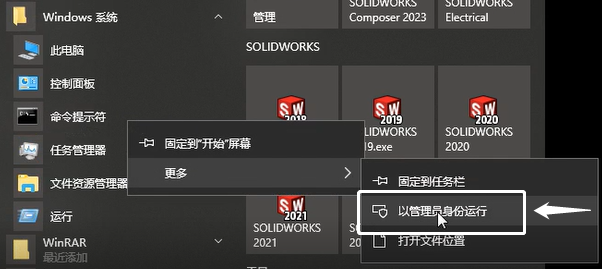
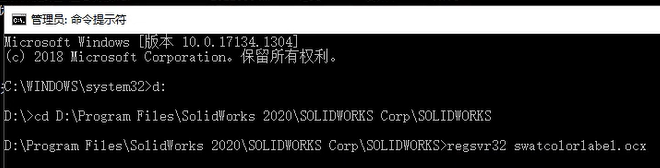
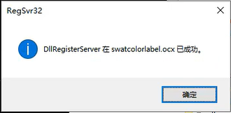

SW 异常-拔模分析崩溃
问题
使用拔模分析时崩溃 vcruntime140
方法
1、使用【开始菜单栏-Windows 系统-命令提示符】”以管理员身份运行”。
2、在命令提示符内：依次输入一下内容。
输入：D:（回车调整到 D 盘）
输入：cd D:\Program Files\SolidWorks 2020\SOLIDWORKS Corp\SOLIDWORKS（回车进入 ocx 文件目录）
输入：regsvr32 swatcolorlabel.ocx （回车 regsvr 注册加载 ocx 文件）
3、确认 regsvr 操作，重启 SW 使用【评估-拔模分析】检查崩溃是否继续复现？
其他
VCRuntime140_1:00002743，是指在运行 SolidWorks 时缺失了 Microsoft Visual C++ Redistributable for Visual Studio 2015 库文件而导致的错误。这个错误通常是由于 SolidWorks 和 Windows 操作系统不兼容、操作系统损坏、注册表损坏、防病毒软件以及硬件驱动程序等问题引起的。解决此错误的方法如下：
1. 安装 Microsoft Visual C++ Redistributable for Visual Studio 2015 库文件。
2. 更新操作系统到最新版本以确保与 SolidWorks 兼容。
3. 通过 SolidWorks Rx 工具来检测和修复相关错误。
4. 禁用或卸载防病毒软件程序。
5. 确定计算机硬件驱动程序都是最新版本并进行更新。
6. 使用 Windows 自带的 sfc /scannow 命令来检查和修复操作系统的损坏问题。
如果以上方法都没有解决问题，请考虑卸载并重新安装 SolidWorks 软件。